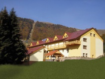

19. ročník konferencie ITAT sa bude konať v penzióne Zornička v dňoch 20.-24. septembra 2019.
Vďaka sponzorskému daru firmy Profinit, s.r.o. poskytneme zľavu z registračného poplatku 70 Eur študentom a doktorandom. Podmienkou je, aby študent bol spoluautor článku, ktorý na konferencii aj odprezentuje.
Konferencia ITAT je platformou, ktorá zastrešuje workshopy prevažne pre prezentáciu výsledkov mladých vedeckých pracovníkov a doktorandov v oblasti informatiky. Konferencia poskytuje priestor na výmenu informácií v komunite, ako aj neformálne stretnutia účastníkov v horskom prostredí. Rokovacie jazyky workshopov si určujú ich organizátori.